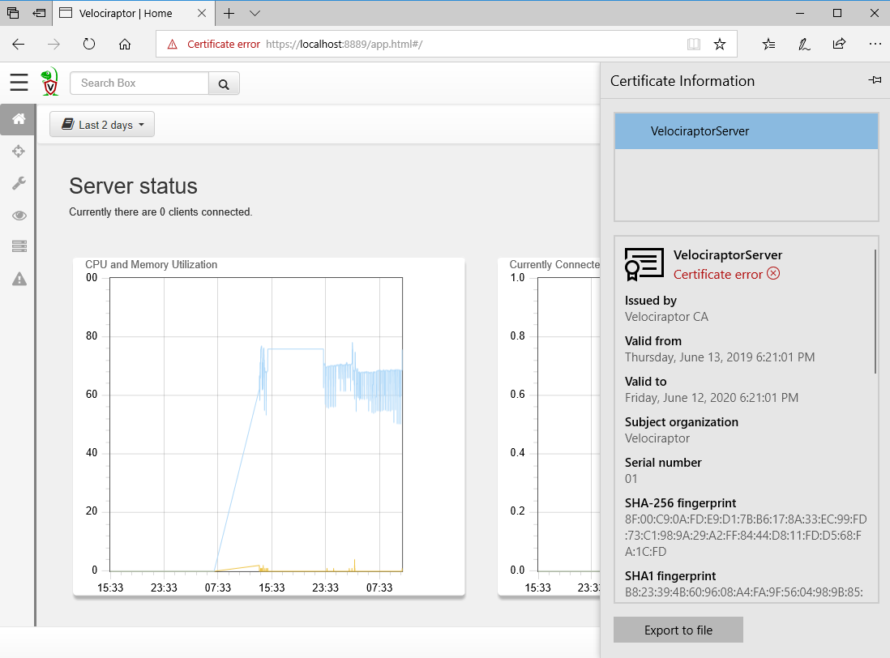

Standalone Deployment
The simplest way to deploy Velociraptor is via a self-signed, stand-alone deployment. Later we’ll see how to deploy Velociraptor in production, but this page will help you deploy a stand-alone test environment.
Overview
Before we start, it’s useful to see how a Velociraptor deployment looks at a high level:

Endpoint systems (also called clients) connect to the server (also called the frontend). The administrator (digital forensic investigator, threat hunter, SOC analyst, IT security operations, etc.) uses their browser to connect to the Velociraptor GUI over SSL. The administrator can query endpoints to collect forensic artifacts or for continual real-time monitoring.
The Velociraptor binary distributed through our Github releases page contains all Velociraptor functionality in one binary, without any libraries or external dependencies. The same executable can act as a server or a client depending on command line options, making it easy to deploy and use. Just ensure you use the correct binary for the operating system on your server and endpoints - Windows, Linux or Mac (Darwin).
A Velociraptor server will also operate with Velociraptor endpoints from any supported operating system. For example, a Velociraptor server running on Linux will support endpoints running Windows, Linux and Mac, so long as the server and endpoints have correct and corresponding configuration files - see below.
1. Decide where to locate the Velociraptor server
For testing purposes, you don’t even need two computers. You can simply run both the Velociraptor server and a client on the same computer. You can even use the same Velociraptor executable - just specify the appropriate configuration files when starting the server and client processes (see below).
For more interesting testing, you’ll want to setup a dedicated server and deploy to a group of endpoints. You can use virtual machines, but it’s not essential, since Velociraptor requires no libraries or external dependencies and has an extremely light installation footprint, only writing the configuration, state and history files it needs, all of which can easily be deleted after testing, along with the executable.
However when setting up a longer-term deployment, the main decision is whether the Velociraptor server should be inside or outside your network. Here are some considerations:
Server inside the network
Doesn’t require external server space nor an external domain
Doesn’t require allowing egress from inside your network, since all client-server communications remain inside the network
However clients are only accessible when they’re inside the network (or possibly when connecting via VPN).
Server outside the network
- Requires external server space; we recommend a cloud-based platform such as AWS
Works best with an external resolvable DNS name - dynamic DNS is useful here
Requires allowing egress connections from inside your network to the Velociraptor server, which can be locked down to only the default service ports - TCP/8000 for client-server comms and TCP/8889 for the administrator to access the GUI
A significant benefit is that clients will still communicate with the server when outside your network perimeter, providing excellent accessibility.
Inside the network, with external accessibility
Another possibility is setting up the Velociraptor server outside the network, but allowing clients to connect from the Internet. This provides most of the benefits of both deployment options described above, however will require allowing ingress access and possibly NAT on your network perimeter.
2. Configure DNS and ports as required
If you want endpoints to reach the Velociraptor server across the Internet, you must provide an external DNS name for the server. If you use a dynamic external IP address you might want to use dynamic DNS as well. The DNS name will be used by the clients to connect to the frontends, so you need to ensure the port is open and DNS names resolve properly.
The default service ports listening on the server are as follows, although please note that these can be easily changed in the client and server config files that we’ll soon be creating:
- TCP/8000 for client-server communications
- TCP/8889 for access to the GUI, which is only required for users of the server
- TCP/8001 if you require access to the API, which is not required by default.
It might be tempting to specify an IP address here, especially if you have a static IP or this is an internal deployment. This is not recommended, since if you need to change the IP address, existing clients will continue to attempt to contact the old IP address, rendering them unreachable.
3. Generate the server and client configuration files
Now that you’ve decided on your server location and setup any necessary networking, it’s time to create the server and client configuration files.
Velociraptor uses a pair of configuration files to control the server and endpoints. These define settings such as the location of the server, the communication ports and the encryption keys used to secure client-server comms.
Therefore our next step is to generate configuration files for our new deployment. The easiest way to get started is using the interactive config generator, which will build a pre-configured deployment type. These files are plain-text and you can easily edit them later to change settings if required.
Start the interactive config generator as shown below. The various options presented by the config generator are described further below. Note these examples demonstrate configuration on a Linux server, however the commands for Windows are almost identical; only the locations of the folders you choose for the data stores will differ.
$ velociraptor config generate -i
?
Welcome to the Velociraptor configuration generator
---------------------------------------------------
I will be creating a new deployment configuration for you. I will
begin by identifying what type of deployment you need.
[Use arrows to move, space to select, type to filter]
> Self Signed SSL
Automatically provision certificates with Lets Encrypt
Authenticate users with Google OAuth SSO
Self-signed SSL certificates
In a self-signed SSL deployment, communication between the user and frontend occurs over TLS with self-signed certificates.
In this mode of operation, the endpoints will pin the server’s self-signed certificate and will in fact refuse to communicate with a server signed via a public CA. This is actually more secure than standard PKI, because even a compromised public CA can not sign for the Velociraptor server.
GUI communications are authenticated with basic Auth and the GUI will bind to localhost only on port 8889 by default - i.e. https://localhost:8889/
Selecting Self Signed SSL proceeds to ask the following questions
and suggests default options.
Continue below for details about the options presented in this interactive configuration wizard.
Self Signed SSL
Generating keys please wait....
? Enter the frontend port to listen on. 8000
? What is the public DNS name of the Frontend (e.g. www.example.com): www.example.com
? Path to the datastore directory. /data/velo/
? Path to the logs directory. /data/logs/
? Where should i write the server config file? server.config.yaml
? Where should i write the client config file? client.config.yaml
? GUI Username or email address to authorize (empty to end): mic
? Password *********
Configuring the data store
Velociraptor uses two locations for data storage - you’ll notice the config generator asks where you want to put these.
- Data Store - holds details about clients and GUI users
- Logs - holds audit logs.
Pick locations with a reasonable amount of disk space, although this will vary according to your requirements for collecting data from endpoints and running hunts across your network.
These locations can also be changed by editing the configuration files. If you want to move these, you’ll need to move the folders and edit the server configuration file. Note that clients and servers hold different information in their respective data stores.
Velociraptor does not enforce any particular data retention policies. At any time the data store can be wiped and the server restarted. If this happens, all the currently deployed clients will be automatically re-enrolled with their existing client IDs. You might want to archive any custom artifacts that you wrote however.
Since Velociraptor uses plain text files for its configuration, it’s possible to archive the entire deployment, or simply delete older files with a scheduled or automated task, or a cron job.
Configuration files generated
The interactive config generator will now create both a client and server configuration file, which by default are stored in the local folder and named as follows:
- server.config.yaml
- client.config.yaml
You can inspect these after the config generator is finished - they’re just plain text files.
Creating GUI users
The configuration process will now create some GUI users, who will be allowed to log into the admin GUI.
Note that the accounts you create here are not related to any operating system user accounts. They are completely separate and have no security relationship, unless you choose to implement SSO via Google OAuth.
You can always add new users to the GUI using the command
velociraptor --config server.config.yaml user add MyUserName. User
credentials are stored in the data store and not in the config
file. If you need to change a user’s password simply add them again
with the new password.
4. Start the server
Now that you’ve generated a server configuration file -
server.config.yaml - it’s time to start your Velociraptor server.
We start the server using the frontend command like so (the -v
flag causes verbose output to be shown in the terminal):
# velociraptor --config server.config.yaml frontend -v
[INFO] 2019-04-01T14:44:40+10:00 Starting Frontend. {"build_time":"2019-04-01T00:25:49+10:00","commit":"503b1cf","version":"0.2.8"}
[INFO] 2019-04-01T14:44:40+10:00 Loaded 99 built in artifacts
[INFO] 2019-04-01T14:44:40+10:00 Loaded artifact_definitions/custom/Test.Yara.Scan.yaml
[INFO] 2019-04-01T14:44:40+10:00 Launched Prometheus monitoring server on 127.0.0.1:8003
[INFO] 2019-04-01T14:44:40+10:00 Frontend is ready to handle client TLS requests at 0.0.0.0:8000
[INFO] 2019-04-01T14:44:40+10:00 Starting hunt manager.
[INFO] 2019-04-01T14:44:40+10:00 Launched gRPC API server on 127.0.0.1:8001
[INFO] 2019-04-01T14:44:40+10:00 GUI is ready to handle TLS requests {"listenAddr":"127.0.0.1:8889"}
[INFO] 2019-04-01T14:44:40+10:00 Starting hunt dispatcher.
[INFO] 2019-04-01T14:44:40+10:00 Starting stats collector.
The info messages will indicate which port the GUI will listen on,
i.e. https://127.0.0.1:8889
Velociraptor currently does not support multiple frontends - all clients connect to the same frontend which performs all roles (client-server connections, serving the GUI and running the API server). We have used Velociraptor with deployments of around 5,000 endpoints and it performs quite well. Eventually we plan to support horizontal scaling to multiple frontends.
5. Verify the GUI works
Start a browser and visit your GUI URL (remember, use HTTPS and the default port is TCP/8889). In this mode, the GUI is served over TSL with a self-signed certificate. Your browser will likely report an error due to the unsigned certificate (which as mentioned above, can actually be more secure than a certificate signed by a CA). This is perfectly fine and you can click through these messages and continue to the GUI web page.
You will now be presented with a login screen; login as the user you created earlier during the configuration phase.

You can also obtain an SSL certificate from Let’s Encrypt, to avoid the browser warning being displayed. Details are provided in Cloud Deployment.
Server setup complete
Thats it! Well done.
You now have a Velociraptor server running and waiting for clients to connect.
Now let’s install some clients.